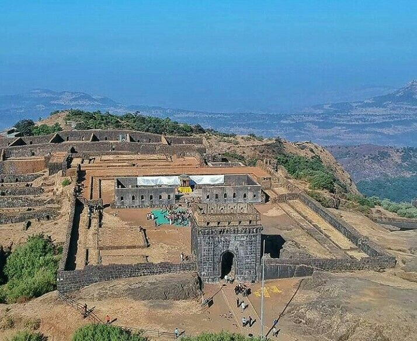

Raigad Fort is one of the most important historical forts in India and served as the capital of the Maratha Empire under Chhatrapati Shivaji Maharaj. It is known for its strong architecture and strategic location, making it nearly impossible for enemies to attack.
The fort is located in the Raigad district of Maharashtra, India, in the Sahyadri mountain range. It stands at an altitude of about 820 meters (2700 feet) above sea level. Raigad Fort was rebuilt by Shivaji Maharaj in 1674 when he was crowned as the king of the Maratha Empire.
Raigad Fort holds great historical importance as it was the center of administration and power during Shivaji Maharaj’s rule. Many important events, including his coronation, took place here. It symbolizes bravery, leadership, and the rich heritage of Maharashtra.
Today, Raigad Fort is a popular tourist destination and attracts thousands of visitors who come to explore its ruins, enjoy scenic views, and learn about its glorious past.